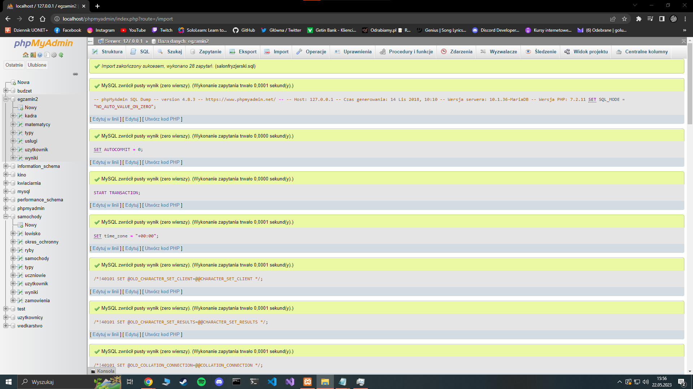
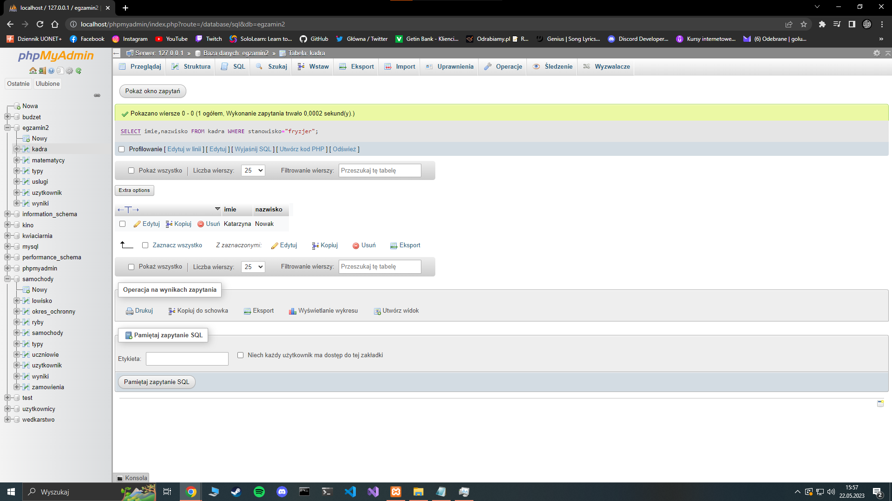
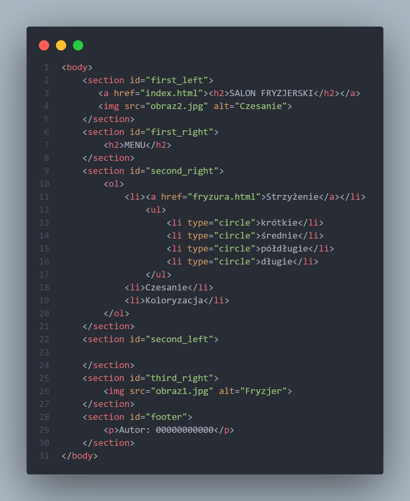
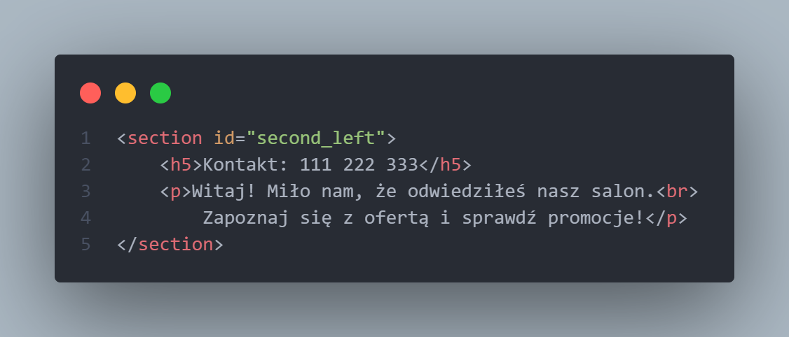

Salon Fryzjerski
Na samym początku należy wykonać zrzut ekranu po zaimportowaniu bazy danych. Zrzut powinien obejmować cały obszar ekranu, łącznie z paskiem zadań.

Wykonujemy 4 poleceń sql i również udokumentowanie ich działania za pomocą zrzutów ekranu.
Pierwsza kwerenda ma za zadanie wybrać pole imie i nazwisko z tabeli kadra, jeśli pracownik jest na stanowisku fryzjer.

Druga kwerenda ma policzyć liczbę rekordów w tabeli usługi dla wszystkich usług fryzjerskich.

Trzecie kwerenda tworzy użytkownia o nazwie fryzjer i haśle Fryz12.

Ostatnia, czwarta kwerenda nadaje stworzonemu wcześniej użytkownikowi uprawnienia do przeglądania i zmieniania oraz modyfikowania struktury w tabeli kadra.
Następnym krokiem jest przeskalowanie zdjęć.
Zdjęcie obraz1.jpg skalujemy z zachowaniem proporcji, tak aby wysokość zdjęcia wynosiła dokładnie 290px.
Zdjęcie obraz2.jpg skalujemy z zachowaniem proporcji, tak aby szerokość zdjęcia wynosiła dokładnie 600px.
Przechodzimy do budowy całej struktury naszej strony.
Tworzymy 2 pliki o nazwach index.html oraz fryzura.html. Pliki te mają różnić się tylko drugim blokiem lewym.
Otwieramy plik index.html i tworzymy podstawową strukturę każdej strony internetowej.

Następnie stosujemy standard kodowania polskich znaków.
Nadajemy stronie nazwy "Usługi fryzjerskie" oraz prawidłowe połączenie pliku o nazwie styl2.css z naszą stroną.
Tworzymy podział strony na bloki: 2 bloki po lewej stronie i 3 po prawej, poniżej stopka

Nastał czas wstawienie do naszych bloków zawartości.
Pierwszy blok lewy: nagłówek drugiego stopnia "SALON FRYZJERSKI", który jest także
odnośnikiem do strony index.html, obraz o nazwie obraz2.jpg z tekstem alternatywnym "Czesanie".
Pierwszy blok prawy: nagłówek drugiego stopnia o treści "MENU".
Drugi blok prawy: Lista numerowana (uporządkowana) z elementami: Strzyżenie, Czesanie, Koloryzacja;
element "Strzyżenie" ma zagnieżdżoną listę punktowaną nieuporządkowaną
z elementami: którkie, średnie, półdługie, długie;
tekst elementu "Strzyżenie" jest równocześnie odnośnikiem do strony fryzura.html
Trzeci blok prawy: obraz obraz1.jpg z tekstem alternatywnym "Fryzjer".
Stopka: akapit o treści "Autor: " dalej należy wstawić numer PESEL zdającego.

Kopiujemy zawartość pliku index.html, przechodzimy do pliku fryzura.html i wklejamy tam skopiowaną wcześniej treść
Wracamy do pliku index.html i w drugim bloku lewym tworzymy nagłówek 5 stopnia z treścią "Kontakt: 111 222 333" oraz akapit o treści zgodnej z obrazem 2, łamanie wiersza zgodne z obrazem 2.

Otwieramy plik fryzura.html i tutaj również wypełniamy drugi blok lewy następującą treścią: nagłówek 3 stopnia z treścią "Dziś promocja na strzyżenie włosów".
Cztery pola radio jedno pod drugim z podpisami: Krótkie, Średnie, Półdługie, Długie, w danym momencie może być zaznaczone tylko jedno pole radio
Poniżej przycisk o treści "Odkryj promocję".
Poniżej wynik działania skryptu.

Czas na utworzenie stylu do naszej strony.
Ustawiamy dla całej strony domyślny krój czcionki Helvetica

Dla pierwszego bloku lewego ustawiamy wysokość: 400px; szerokość: 70%; kolor tła: Snow; wyrównanie tekstu do środka
Dla drugiego bloku lewego ustawiamy wysokość: 400px; szerokość: 70%; kolor tła: Snow; rozmiar czcionki: 150%
Dla pierwszego bloku prawego ustawiamy wysokość: 150px; szerokość: 30%; kolor tła: SteelBlue; kolor czcionki: biały; wyrównanie tekstu do środka

Dla drugiego bloku prawego ustawiamy wysokość: 350px; szerokość: 30%; kolor tła: SteelBlue; kolor czcionki: biały;

Dla trzeciego bloku prawego ustawiamy wysokość: 300px; szerokość: 30%; kolor tła: Snow; kolor czcionki: biały; wyrównanie tekstu do środka
Dla znacznika stopki ustawiamy kolor tła SteelBlue oraz biały kolor czcionki
Dla nagłówka drugiego stopnia ustawiamy rozmiar czcionki: 250%
Dla obrazu ustawiamy marginesy wewnętrzne: 4px

W momencie, gdy kursor znajduje się na obrazie, styl obrazu zmienia się na: marginesy wewnętrzne 3 px oraz obramowanie linią ciągłą o szerokości 1 px i kolorze SteelBlue

Ostatnim elementem budowy strony jest dodanie skryptu.
Skrypt musi uruchamiać się po wciśnięciu przycisku na stronie fryzura.html
Skrypt musi podać cenę strzyżenia w zależności od wyboru dokonanego w polu radio

Skrypt wyświetla wynik działania pod przyciskiem według wzoru: "Cena strzyżenia: wartość".